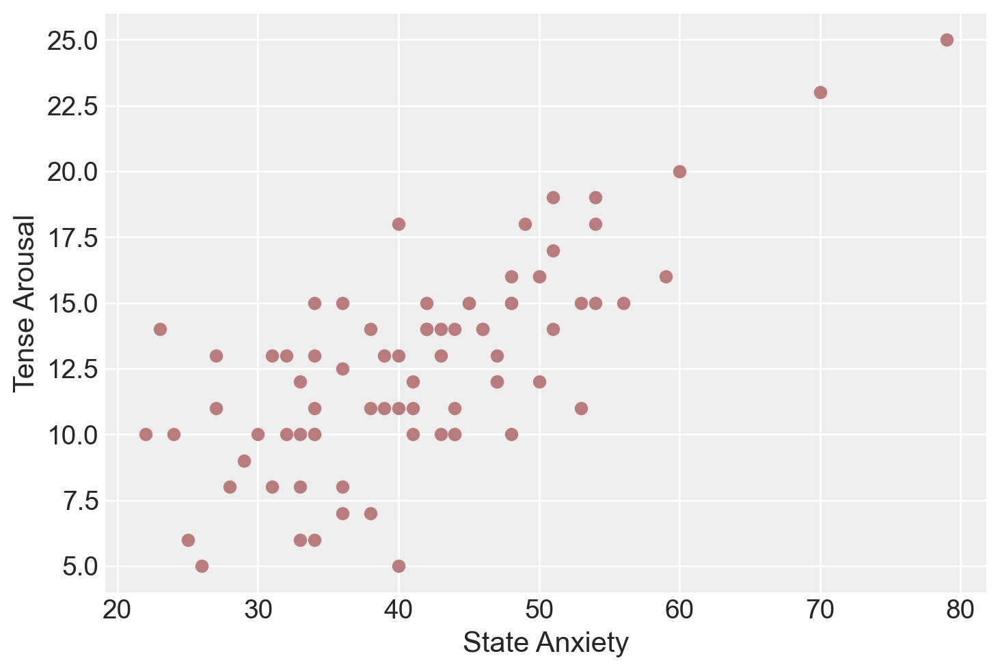
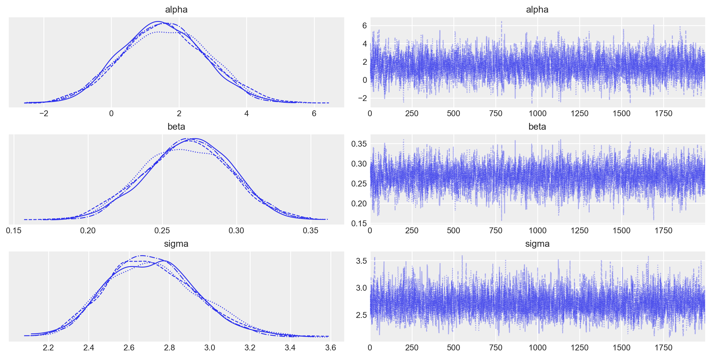
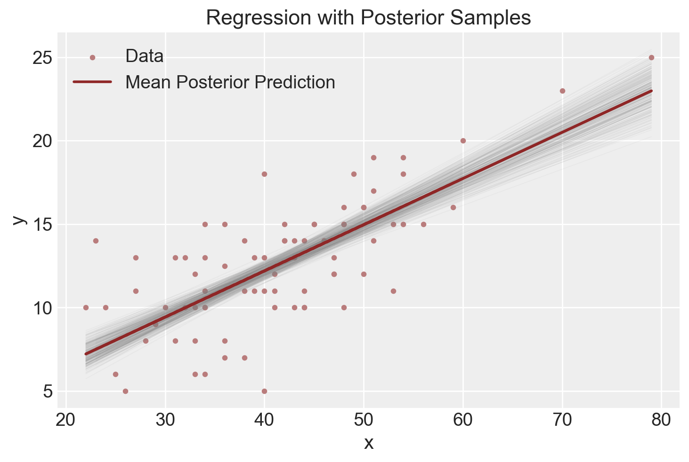
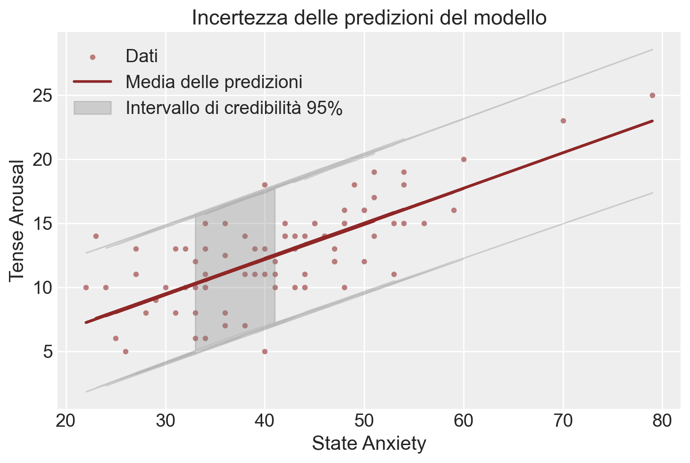
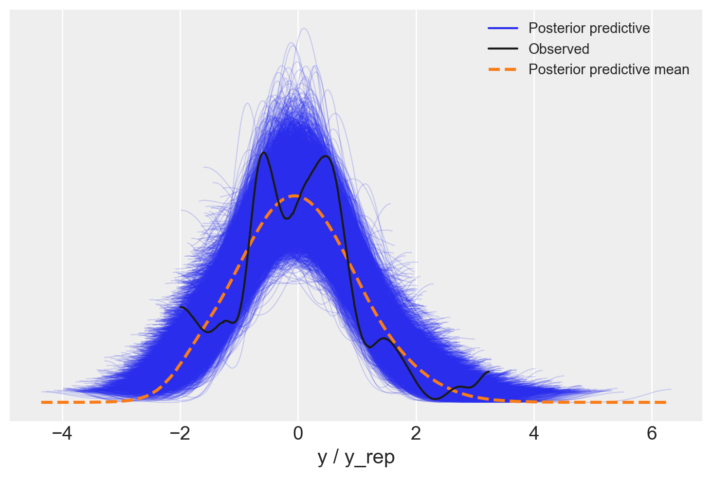

import os
import logging
import pandas as pd
import numpy as np
import seaborn as sns
import arviz as az
import matplotlib.pyplot as plt
from IPython import get_ipython
import warnings
warnings.simplefilter(action="ignore", category=FutureWarning)
import cmdstanpy
cmdstanpy.utils.get_logger().setLevel(logging.ERROR)
from cmdstanpy import CmdStanModel
import pingouin as pg52 Modello di regressione lineare bayesiano
Prerequisiti
- Leggere Regression and Other Stories (Gelman, Hill, e Vehtari 2020)
- Concentrarsi sui capitoli 6 “Background on regression modeling”, 7 “Linear regression with a single predictor” e 10 “Linear regression with multiple predictors”, che forniscono una guida dettagliata ai modelli lineari.
- Leggere Applied regression analysis and generalized linear models (Fox 2015)
- Concentrarsi sul capitolo 2 “Linear Models and Least Squares”, che offre un trattamento complementare dei modelli lineari da una prospettiva diversa.
- Leggere Why most published research findings are false (Ioannidis 2005)
- Dettaglia gli aspetti che possono minare le conclusioni tratte dai modelli statistici.
Concetti e competenze chiave
- I modelli lineari costituiscono il metodo più popolare per effettuare l’inferenza statistica.
- La regressione lineare semplice e multipla modella una variabile di esito continua in funzione di una o più variabili predittive.
- I modelli lineari possono essere usati sia per l’inferenza che per la previsione.
Preparazione del Notebook
seed: int = sum(map(ord, "bayesian_bivariate_regression"))
rng: np.random.Generator = np.random.default_rng(seed=seed)
sns.set_theme(palette="colorblind")
az.style.use("arviz-darkgrid")
%config InlineBackend.figure_format = "retina"
# Get the home directory
home_directory = os.path.expanduser("~")
# Construct the path to the Quarto project directory
project_directory = os.path.join(home_directory, "_repositories", "psicometria")Introduzione
I modelli lineari sono stati utilizzati in varie forme per molto tempo. Stigler (1986) descrive come il metodo dei minimi quadrati, una tecnica per adattare una semplice regressione lineare, fosse associato a problemi fondamentali in astronomia nel 1700, come la determinazione del moto della luna e la riconciliazione del moto non periodico di Giove e Saturno. All’epoca, gli astronomi erano tra i primi a sentirsi a proprio agio nell’utilizzare questi metodi, poiché raccoglievano personalmente le loro osservazioni e sapevano che le condizioni di raccolta dei dati erano simili, anche se i valori delle osservazioni differivano. Questo contrastava con l’approccio più cauto delle scienze sociali, dove la riluttanza a combinare dati eterogenei ritardava l’adozione dei modelli lineari (Stigler 1986).
Come nota Alexander (2023), quando costruiamo modelli, non stiamo scoprendo “la verità”. Un modello non può essere una rappresentazione fedele della realtà. Utilizziamo i modelli per esplorare e comprendere i nostri dati. Non esiste un modello migliore in assoluto, ma solo modelli utili che ci aiutano a imparare qualcosa sui dati che abbiamo e, si spera, qualcosa sul mondo da cui sono stati generati. Quando utilizziamo i modelli, cerchiamo di comprendere il mondo, ma ci sono limiti alla prospettiva che portiamo in questo. Non dovremmo semplicemente inserire dati in un modello sperando che risolva tutto. Non lo farà.
La regressione è in effetti un oracolo, ma un oracolo crudele. Parla per enigmi e si diletta nel punirci per aver posto domande sbagliate.
McElreath (2020)
I modelli scientifici sono strumenti essenziali per comprendere la realtà che ci circonda. Il processo di creazione, esplorazione e analisi di questi modelli è fondamentale per approfondire la nostra conoscenza del mondo. Questo processo si può suddividere in diverse fasi:
- Costruzione: Creiamo modelli basati sulle nostre attuali conoscenze e ipotesi.
- Esplorazione: Studiamo le caratteristiche e le implicazioni dei modelli creati.
- Verifica: Testiamo i modelli confrontandoli con dati reali e osservazioni.
- Valutazione: Apprezziamo l’eleganza e l’efficacia dei modelli quando funzionano bene.
- Analisi critica: Cerchiamo di comprendere i limiti e le debolezze dei nostri modelli.
- Revisione o sostituzione: Quando necessario, modifichiamo o abbandoniamo i modelli inadeguati.
È importante sottolineare che il valore principale di questo processo non risiede nel risultato finale, cioè nel modello stesso, ma nell’apprendimento e nella comprensione che otteniamo durante il percorso. Anche se a volte il modello finale può effettivamente rappresentare accuratamente la realtà, è il processo di sviluppo e analisi che ci fornisce intuizioni preziose.
Quando lavoriamo con i modelli, dobbiamo considerare due aspetti cruciali:
- Il “mondo del modello”: le assunzioni, le semplificazioni e le regole interne del modello stesso.
- Il “mondo reale”: la realtà più ampia e complessa che stiamo cercando di comprendere e descrivere.
È fondamentale riconoscere che i dati su cui basiamo i nostri modelli spesso non sono perfettamente rappresentativi della realtà. Questo può essere dovuto a limitazioni nella raccolta dei dati, bias nei campioni o semplicemente alla complessità del mondo reale. Di conseguenza, i modelli addestrati su questi dati, sebbene utili, non sono infallibili.
Come già rilevato nel Capitolo 12, per utilizzare efficacemente i modelli, dobbiamo porci costantemente due domande chiave:
- In che misura il modello ci insegna qualcosa sui dati che abbiamo a disposizione?
- Quanto accuratamente i dati che abbiamo riflettono il mondo reale su cui vogliamo trarre conclusioni?
Mantenere queste domande in primo piano ci aiuta a utilizzare i modelli in modo critico e consapevole, riconoscendone sia il potenziale che i limiti. Questo approccio ci permette di sfruttare al meglio i modelli come strumenti per comprendere il mondo, pur rimanendo consapevoli delle loro imperfezioni e delle sfide nella rappresentazione della realtà complessa.
L’evoluzione e l’applicazione dei metodi statistici moderni presentano un interessante caso di studio nell’adattamento degli strumenti scientifici a contesti in rapida evoluzione. Molti dei metodi statistici attualmente in uso trovano le loro radici in campi come l’astronomia e l’agricoltura. Un esempio emblematico è rappresentato da Ronald Fisher, figura di spicco nello sviluppo della statistica moderna, le cui opere seminali furono concepite durante il suo periodo presso un istituto di ricerca agricola.
Tuttavia, il panorama scientifico e tecnologico ha subito profondi cambiamenti dall’epoca di Fisher. L’applicazione di questi metodi statistici si è estesa a contesti che i loro ideatori difficilmente avrebbero potuto prevedere. Questa espansione solleva interrogativi cruciali sulla validità delle assunzioni fondamentali di questi metodi quando applicati in ambiti così diversi da quelli originari.
In conclusione, mentre la statistica rimane uno strumento di inestimabile valore, il suo utilizzo efficace richiede un equilibrio tra una solida conoscenza dei principi fondamentali e la flessibilità necessaria per adattarsi a scenari di ricerca in continua evoluzione. L’integrazione di metodologie diverse è essenziale per garantire l’affidabilità e la robustezza dei modelli statistici. Solo attraverso questo approccio olistico e adattativo possiamo sperare di comprendere e interpretare adeguatamente la complessità del mondo contemporaneo.
In questo capitolo, esploreremo due modelli statistici fondamentali: la regressione lineare bivariata e la regressione lineare multipla. La prima considera una sola variabile esplicativa, mentre la seconda ne include diverse. Per ciascun modello, esamineremo due approcci distinti:
- L’utilizzo delle funzioni di
pingouin, particolarmente utili per l’analisi esplorativa dei dati (EDA) quando si necessita di risultati rapidi. - L’approccio bayesiano, ideale quando l’obiettivo principale è l’inferenza statistica.
È importante sottolineare che i modelli statistici vengono utilizzati principalmente per due scopi: inferenza e previsione. Mentre la previsione si limita a descrivere l’associazione tra le variabili, l’inferenza mira a stabilire relazioni di causa-effetto attraverso l’uso del modello lineare. L’inferenza causale richiede una profonda conoscenza del fenomeno in esame e una progettazione sperimentale o quasi-sperimentale adeguata per giustificare le assunzioni necessarie.
Indipendentemente dall’approccio scelto, è fondamentale tenere presente che l’analisi di regressione è essenzialmente una forma di media ponderata. Di conseguenza, i risultati ottenuti riflettono inevitabilmente i bias e le peculiarità del dataset utilizzato.
Infine, una nota sulla terminologia e sulla notazione. Per ragioni storiche e specifiche del contesto, esistono vari termini usati per descrivere la stessa idea nella letteratura. Seguiamo Gelman, Hill, e Vehtari (2020) e utilizziamo i termini “outcome” e “predictor”, e la specificazione del modello bayesiano di McElreath (2020).
52.1 Modellare l’associazione statistica tra variabili
Per introdurre l’approccio bayesiano al modello di regressione, esamineremo un set di dati che riguarda la relazione tra i punteggi di affect e arousal. I dati provengono da due studi condotti nel Personality, Motivation and Cognition Laboratory della Northwestern University, in cui sono stati utilizzati film per indurre stati affettivi (Rafaeli e Revelle 2006).
Qui ci concentreremo sull’associazione tra l’ansia di stato, considerata come variabile indipendente, e la scala di Tense Arousal del Motivational State Questionnaire (MSQ), considerata come variabile dipendente.
In precedenza, abbiamo applicato il modello normale a una singola variabile. Tuttavia, di solito siamo interessati a modellare come una variabile di esito sia associata a una variabile predittiva. Se esiste un’associazione statistica tra la variabile predittiva e la variabile di esito, possiamo utilizzarla per predire il risultato. Quando la variabile predittiva è incorporata nel modello in un modo specifico, otteniamo una regressione lineare.
I dati dell’esempio sono forniti di seguito.
data = pd.read_csv("../../data/affect.csv")
# Seleziona solo le colonne state1 e TA1
df = data[["state1", "TA1"]]
df.head()| state1 | TA1 | |
|---|---|---|
| 0 | 41 | 11.0 |
| 1 | 26 | 5.0 |
| 2 | 31 | 8.0 |
| 3 | 28 | 8.0 |
| 4 | 47 | 12.0 |
L’associazione tra le due variabili, ansia di stato e Tense Arousal, è rappresentata nel grafico sottostante. Il grafico suggerisce che l’associazione può essere approssimata da una semplice funzione matematica, come una retta. Tuttavia, è evidente che una funzione lineare sia troppo semplicistica per rappresentare accuratamente questi dati, poiché non è possibile trovare una singola retta che passi per tutti i punti del diagramma di dispersione.
color_fill = "#b97c7c"
plt.scatter(df["state1"], df["TA1"], color=color_fill)
plt.xlabel("State Anxiety")
plt.ylabel("Tense Arousal")
plt.show()
52.2 Modello Generativo dei Dati
Per descrivere la relazione tra ansia di stato e Tense Arousal, utilizzeremo un modello statistico lineare. Assumeremo che la relazione media tra \(x\) (ansia di stato) e \(y\) (Tense Arousal) possa essere rappresentata da una retta, ma influenzata da un certo grado di errore. Supponiamo che questo errore sia costante ai vari livelli di \(x\) e segua una distribuzione Normale. Inoltre, presupponiamo che gli errori attorno alla retta di regressione siano indipendenti tra loro.
In questo contesto, le nostre assunzioni delineano un modello statistico lineare, formalizzato come segue:
\[ y_i = \alpha + \beta x_i + \epsilon_i \]
dove:
- \(\alpha\) è l’intercetta,
- \(\beta\) è il coefficiente angolare,
- \(\epsilon_i \sim \text{Normale}(0, \sigma^2)\) rappresenta l’errore, con media zero e varianza costante \(\sigma^2\).
Queste assunzioni ci permettono di applicare metodi di regressione lineare per stimare i parametri del modello (\(\alpha\) e \(\beta\)) e quantificare l’incertezza delle predizioni, considerando la variabilità nei dati.
Il modello lineare descritto sopra costituisce il modello generativo dei dati (verosimiglianza):
\[ y_i = \alpha + \beta x_i + \epsilon_i, \quad i \in 1, \dots N \]
o equivalentemente
\[ \epsilon_n \sim \text{Normale}(0, \sigma) \]
Questo modello descrive come i dati \(y\) sono generati. Ogni osservazione \(y_i\) è una combinazione lineare di una costante \(\alpha\) (intercetta), un coefficiente \(\beta\) che moltiplica il valore della variabile \(x\) (ansia di stato), e un termine di errore \(\epsilon_n\) che cattura la variabilità non spiegata dal modello lineare.
Il termine di errore \(\epsilon_i\) è distribuito secondo una distribuzione normale con media 0 e deviazione standard \(\sigma\). Questo implica che l’errore è simmetricamente distribuito attorno a zero e ha una variabilità definita da \(\sigma\).
L’equazione
\[ y_i \sim \text{Normale}(\alpha + \beta x_i, \sigma), \quad i \in 1, \dots N \]
mostra come il valore osservato \(y_i\) segue una distribuzione normale con media \(\alpha + \beta x_i\) e deviazione standard \(\sigma\). Questo significa che, dato \(x_i\), i valori di \(y_i\) sono distribuiti normalmente attorno alla retta di regressione definita da \(\alpha + \beta x_i\).
Consideriamo il caso in cui \(y_i\) rappresenta Tense Arousal e \(x_i\) rappresenta l’ansia di stato. Secondo il nostro modello:
- \(\alpha\) è l’intercetta, ovvero il valore atteso di Tense Arousal quando l’ansia di stato è zero.
- \(\beta\) è il coefficiente che indica quanto aumenta (o diminuisce) Tense Arousal per ogni aumento di un punto dell’ansia di stato.
- \(\sigma\) è la deviazione standard che misura la variabilità di Tense Arousal attorno alla media prevista dal modello.
Questo modello ci consente di stimare l’effetto dell’ansia di stato su Tense Arousal e di quantificare l’incertezza associata a queste stime.
52.3 Modello Bayesiano della Regressione Bivariata
52.3.1 Verosimiglianza
Assumiamo la verosimiglianza che abbiamo descritto in precedenza:
\[ y \sim \text{Normale}(\alpha + \beta x, \sigma) \]
Questo significa che i dati \(y\) seguono una distribuzione normale con media \(\alpha + \beta x\) e deviazione standard \(\sigma\). In altre parole, il valore osservato \(y\) è generato come una combinazione lineare di \(\alpha\) (intercetta), \(\beta\) (coefficiente della variabile \(x\)), più un errore che segue una distribuzione normale con deviazione standard \(\sigma\).
52.3.2 Distribuzioni a Priori
In una prima versione del modello, useremo delle distribuzioni a priori uniformi per i tre parametri.
52.3.3 Distribuzioni a Posteriori
Le distribuzioni a priori vengono combinate con i dati osservati attraverso il teorema di Bayes per aggiornare le nostre credenze sui parametri del modello. Il risultato è una distribuzione a posteriori per ciascun parametro che riflette sia l’informazione contenuta nei dati che le credenze iniziali incorporate nelle distribuzioni a priori. Questo processo permette di fare inferenze più robuste, specialmente quando i dati sono limitati o rumorosi.
52.3.4 Codice Stan
Il codice Stan che implementa il modello precedente è contenuto nel file arousal_model_1.stan. Compiliamo e stampiamo il modello.
stan_file = os.path.join(project_directory, 'stan', 'arousal_model_1.stan')
model = CmdStanModel(stan_file=stan_file)
print(model.code())data {
int<lower=1> N; // numero totale di osservazioni
vector[N] y; // variabile di risposta
vector[N] x; // variabile predittore
}
parameters {
real alpha; // intercetta
real beta; // coefficiente angolare
real<lower=0> sigma; // deviazione standard residua
}
model {
// verosimiglianza
y ~ normal(alpha + beta * x, sigma);
}
Si osservi che, in questa prima istanziazione del modello bayesiano, non avendo specificato le distribuzioni a priori per i parametri \(\alpha\), \(\beta\) e \(\sigma\), Stan assume distribuzioni a priori uniformi per questi parametri.
52.3.5 Dizionario con i dati
Sistemiamo i dati in un dizionario come richiesto dal modello Stan.
stan_data = {
"N": len(df["TA1"]),
"x": df["state1"],
"y": df["TA1"]
}
print(stan_data){'N': 78, 'x': 0 41
1 26
2 31
3 28
4 47
..
73 40
74 60
75 24
76 33
77 33
Name: state1, Length: 78, dtype: int64, 'y': 0 11.0
1 5.0
2 8.0
3 8.0
4 12.0
...
73 13.0
74 20.0
75 10.0
76 10.0
77 6.0
Name: TA1, Length: 78, dtype: float64}52.3.6 Campionamento MCMC
Eseguiamo il campionamento MCMC.
fit = model.sample(
data=stan_data,
iter_warmup=1_000,
iter_sampling=2_000,
seed=123,
show_progress=False,
show_console=False
)52.3.7 Distribuzioni a posteriori
Esaminiamo le distribuzioni a posteriori dei parametri.
_ = az.plot_trace(fit, var_names=(["alpha", "beta", "sigma"]))
L’oggetto fit generato da cmdstanpy appartiene alla classe cmdstanpy.stanfit.mcmc.CmdStanMCMC. Questo oggetto è funzionalmente equivalente a un oggetto della classe InferenceData, permettendo quindi la sua manipolazione tramite le funzioni fornite da ArviZ. Esaminiamo dunque un sommario delle distribuzioni a posteriori dei parametri del modello lineare.
az.summary(fit, var_names=(["alpha", "beta", "sigma"]), hdi_prob=0.94)| mean | sd | hdi_3% | hdi_97% | mcse_mean | mcse_sd | ess_bulk | ess_tail | r_hat | |
|---|---|---|---|---|---|---|---|---|---|
| alpha | 1.552 | 1.256 | -0.859 | 3.816 | 0.026 | 0.019 | 2395.0 | 2748.0 | 1.0 |
| beta | 0.267 | 0.029 | 0.213 | 0.323 | 0.001 | 0.000 | 2436.0 | 2858.0 | 1.0 |
| sigma | 2.716 | 0.227 | 2.314 | 3.149 | 0.004 | 0.003 | 3410.0 | 3273.0 | 1.0 |
Confrontiamo i valori ottenuti con l’approccio bayesiano con quelli trovati usando la procedura di massima verosimiglianza.
lm = pg.linear_regression(df["state1"], df["TA1"])
lm.round(2)| names | coef | se | T | pval | r2 | adj_r2 | CI[2.5%] | CI[97.5%] | |
|---|---|---|---|---|---|---|---|---|---|
| 0 | Intercept | 1.56 | 1.25 | 1.25 | 0.22 | 0.52 | 0.52 | -0.93 | 4.04 |
| 1 | state1 | 0.27 | 0.03 | 9.14 | 0.00 | 0.52 | 0.52 | 0.21 | 0.33 |
La somiglianza tra le due soluzioni conferma che, quando usiamo dei prior uniformi per i parametri, i due approcci producono risultati equivalenti.
52.3.8 Interpretazione
Possiamo interpretare i parametri come segue:
- l’intercetta \(\alpha\) corrisponde al valore atteso di Tense Arousal quando l’ansia di stato vale 0;
- la pendenza \(\beta\) ci informa sull’incremento atteso di Tense Arousal quando l’ansia di stato aumenta di un’unità;
- il parametro \(\sigma\) descrive la deviazione standard della dispersione di Tense Arousal attorno alla retta di regressione.
52.4 Predizione
La distribuzione a posteriori non fornisce solo informazioni sui singoli parametri, ma anche sulle loro interdipendenze. Queste relazioni sono riflesse nei campioni a posteriori, che possono essere trasformati in vari modi. Ad esempio, possiamo calcolare la predizione a posteriori del modello lineare per il valore atteso di Tense Arousal quando l’ansia di stato è pari a 30 usando il seguente comando nel blocco generated quantities:
pred = alpha + beta * 30;
Modifichiamo il modello Stan per aggiungere questo comando nel blocco generated quantities e compiliamo il modello.
stan_file = os.path.join(project_directory, "stan", "arousal_model_2.stan")
model = CmdStanModel(stan_file=stan_file)
print(model.code())data {
int<lower=1> N; // numero totale di osservazioni
vector[N] y; // variabile di risposta
vector[N] x; // variabile predittore
}
parameters {
real alpha; // intercetta
real beta; // coefficiente angolare
real<lower=0> sigma; // deviazione standard residua
}
model {
// verosimiglianza
y ~ normal(alpha + beta * x, sigma);
}
generated quantities {
real pred; // predizione
pred = alpha + beta * 30;
}
In questo modello Stan aggiornato, il blocco generated quantities calcola la predizione a posteriori pred per una variabile predittore con valore 30. Questa modifica permette di ottenere la distribuzione a posteriori della predizione per un valore specifico del predittore.
Eseguiamo il campionamento.
fit2 = model.sample(
data=stan_data,
iter_warmup=1_000,
iter_sampling=2_000,
seed=123,
show_progress=False,
show_console=False,
)Esaminiamo la stima a posteriori del valore atteso di Tense Arousal quando l’ansia di stato è pari a 30. Questa analisi fornirà sia una stima puntuale di Tense Arousal che una misura dell’incertezza associata, rappresentata dall’intervallo di credibilità al livello di confidenza scelto.
az.summary(fit2, var_names=(["pred"]), hdi_prob=0.94)| mean | sd | hdi_3% | hdi_97% | mcse_mean | mcse_sd | ess_bulk | ess_tail | r_hat | |
|---|---|---|---|---|---|---|---|---|---|
| pred | 9.566 | 0.456 | 8.722 | 10.392 | 0.008 | 0.006 | 3111.0 | 4351.0 | 1.0 |
52.4.1 Quantificazione dell’incertezza
Per quantificare l’incertezza complessiva nelle predizioni del modello, possiamo calcolare la distribuzione a posteriori delle predizioni per tutti i valori di \(x\) del campione. Questo ci permette di ottenere sia le stime puntuali delle predizioni sia una misura dell’incertezza associata.
Per fare ciò, modifichiamo il blocco generated quantities nel seguente modo:
generated quantities {
vector[N] y_rep; // Predizioni a posteriori per ciascun valore di x
for (n in 1:N) {
y_rep[n] = normal_rng(alpha + beta * x[n], sigma);
}
}Esaminiamo le modifiche:
Dichiarazione del vettore
y_rep:vector[N] y_rep;: Dichiara un vettorey_repdi lunghezzaNper contenere le predizioni a posteriori per ciascun valore dix.
Ciclo
forper generare le predizioni:for (n in 1:N): Itera su tutte le osservazioni.y_rep[n] = normal_rng(alpha + beta * x[n], sigma);: Per ogni valore dix[n], genera una predizione dalla distribuzione normale con mediaalpha + beta * x[n]e deviazione standardsigma. La funzionenormal_rnggenera numeri casuali dalla distribuzione normale specificata, rappresentando l’incertezza nelle predizioni.
Questo approccio consente di ottenere la distribuzione a posteriori delle predizioni, fornendo una visione completa dell’incertezza associata. Dalla distribuzione a posteriori di y_rep, possiamo calcolare sia la stima puntuale (come la media o la mediana delle predizioni) sia gli intervalli di credibilità (come l’intervallo al 95%) per ogni valore di x. Questo offre una misura dell’incertezza delle predizioni, riflettendo la variabilità e l’affidabilità del modello.
Modifichiamo il modello imponendo distribuzioni a priori debolmente informative sui parametri:
- Per \(\alpha\) e \(\beta\), utilizziamo una distribuzione Normale centrata su 0 con una deviazione standard di 2.
- Per \(\sigma\), utilizziamo una distribuzione di Cauchy centrata su 0 con una scala di 2.
stan_file = os.path.join(project_directory, "stan", "arousal_model_3.stan")
model = CmdStanModel(stan_file=stan_file)
print(model.code())data {
int<lower=1> N; // numero totale di osservazioni
vector[N] y; // variabile di risposta
vector[N] x; // variabile predittore
}
parameters {
real alpha; // intercetta
real beta; // coefficiente angolare
real<lower=0> sigma; // deviazione standard residua
}
model {
// distribuzioni a priori
alpha ~ normal(0, 2);
beta ~ normal(0, 2);
sigma ~ cauchy(0, 2);
// verosimiglianza
y ~ normal(alpha + beta * x, sigma);
}
generated quantities {
vector[N] y_rep; // variabili predette
for (n in 1 : N) {
y_rep[n] = normal_rng(alpha + beta * x[n], sigma);
}
}
fit3 = model.sample(
data=stan_data,
iter_warmup=1_000,
iter_sampling=2_000,
seed=123,
show_progress=False,
show_console=False,
)az.summary(fit3, var_names=(["alpha", "beta", "sigma"]), hdi_prob=0.94)| mean | sd | hdi_3% | hdi_97% | mcse_mean | mcse_sd | ess_bulk | ess_tail | r_hat | |
|---|---|---|---|---|---|---|---|---|---|
| alpha | 1.126 | 1.071 | -0.895 | 3.084 | 0.020 | 0.014 | 2803.0 | 3269.0 | 1.0 |
| beta | 0.277 | 0.025 | 0.230 | 0.325 | 0.000 | 0.000 | 2792.0 | 3204.0 | 1.0 |
| sigma | 2.688 | 0.223 | 2.308 | 3.129 | 0.004 | 0.003 | 3466.0 | 3325.0 | 1.0 |
Si noti che, utilizzando distribuzioni a priori debolmente informative, le stime a posteriori dei parametri sono rimaste praticamente invariate, indicando che la verosimiglianza ha prevalso sulle distribuzioni a priori.
Costruiamo ora un grafico che rappresenta i valori osservati insieme alla linea di regressione stimata tramite il modello bayesiano. Al grafico aggiungeremo diverse linee di regressione, ciascuna orientata in base ai valori campionati casualmente dalla distribuzione a posteriori dei parametri \(\alpha\) e \(\beta\).
Poniamoci dunque il problema di recuperare le stime a posteriori dei parametri dall’oggetto fit3, creato dal metodo sample(). La User’s Guide specifica quanto segue:
The sampler outputs are the set of per-chain Stan CSV files, a non-standard CSV file format. Each data row of the Stan CSV file contains the per-iteration estimate of the Stan model parameters, transformed parameters, and generated quantities variables.
Utilizzando il metodo stan_variable(), possiamo ottenere un numpy.ndarray la cui struttura corrisponde a quella delle variabili del programma Stan, ossia i valori della distribuzione a posteriori di ciascun parametro. In questo caso, otteniamo i valori della distribuzione a posteriori di \(\alpha\) e \(\beta\):
# Extract posterior samples
alpha_samples = fit3.stan_variable("alpha")
beta_samples = fit3.stan_variable("beta")Per esempio, stampiamo i primi 20 valori di alpha_samples:
print(alpha_samples[0:20])[1.84977 1.95471 3.53495 0.0202381 2.37552 1.73716 2.02379
0.498677 1.16321 0.997901 1.1977 0.90099 1.62343 0.994237
0.102088 0.648134 2.29379 0.833032 0.98 1.27316 ]len(alpha_samples)8000Avendo ottenuto 8.000 stime della distribuzione a posteriori dei parametri \(\alpha\) e \(\beta\) (2,000 valori per ciascuna delle 4 catene), possiamo calcolare la stima puntuale a posteriori dei parametri nel seguente modo:
mean_alpha = np.mean(alpha_samples)
mean_beta = np.mean(beta_samples)
print(mean_alpha, mean_beta)1.125774793247875 0.276703434375Possiamo sovrapporre la retta di regressione al grafico a dispersione utilizzando le stime a posteriori dei parametri.
# Plot y vs x
x = df["state1"]
plt.scatter(
x, df["TA1"], color=color_fill, label="Data", s=10
) # s is the size of the point
# Draw lines from posterior samples
for i in range(300): # assuming you have at least 300 samples
plt.plot(
x,
alpha_samples[i] + beta_samples[i] * x,
color="gray",
linestyle="-",
linewidth=0.5,
alpha=0.05,
)
# Line using the mean of posterior estimates
mean_alpha = np.mean(alpha_samples)
mean_beta = np.mean(beta_samples)
color_edge = "#8f2727"
plt.plot(
x,
mean_alpha + mean_beta * x,
color=color_edge,
linewidth=2,
label="Mean Posterior Prediction",
)
# Additional plot formatting
plt.xlabel("x")
plt.ylabel("y")
plt.title("Regression with Posterior Samples")
plt.legend()
plt.show()
Le numerose linee di regressione presenti nel grafico visualizzano la nostra incertezza riguardo l’inclinazione esatta della linea di regressione principale. Tuttavia, il grafico mostra chiaramente che questa incertezza è minima.
Possiamo procedere in un altro modo per descrivere l’incertezza della stima. Anziché utilizzare le distribuzioni a posteriori di alpha e beta, possiamo utilizzare la distribuzione a posteriori di y_rep. Procedendo in questo modo otteniamo il grafico mostrato qui sotto.
In questo plot, la linea rossa rappresenta la media delle predizioni a posteriori, mentre l’area grigia rappresenta l’intervallo di credibilità al 95%, mostrando l’incertezza delle predizioni del modello. Questo approccio fornisce una visione più completa e realistica dell’incertezza nelle predizioni rispetto all’approccio che utilizza solo alpha e beta.
# Estrai i campioni posteriori di y_rep
y_rep_samples = fit3.stan_variable("y_rep")
# Calcola la media e l'intervallo di credibilità (ad esempio, 95%) per y_rep
y_rep_mean = np.mean(y_rep_samples, axis=0)
y_rep_lower = np.percentile(y_rep_samples, 2.5, axis=0)
y_rep_upper = np.percentile(y_rep_samples, 97.5, axis=0)
# Plot y vs x
x = df["state1"]
y = df["TA1"]
plt.scatter(x, y, color=color_fill, label="Dati", s=10)
# Plot della media delle predizioni a posteriori
plt.plot(x, y_rep_mean, color=color_edge, linewidth=2, label="Media delle predizioni")
# Plot dell'intervallo di credibilità
plt.fill_between(
x,
y_rep_lower,
y_rep_upper,
color="gray",
alpha=0.3,
label="Intervallo di credibilità 95%",
)
# Formattazione del plot
plt.xlabel("State Anxiety")
plt.ylabel("Tense Arousal")
plt.title("Incertezza delle predizioni del modello")
plt.legend()
plt.show()
Nel primo approccio, calcoliamo l’incertezza delle predizioni utilizzando le distribuzioni a posteriori di alpha e beta. Questo metodo consiste nel generare predizioni lineari per ciascun campione a posteriori di alpha e beta, tracciando quindi le linee di regressione risultanti. Questo ci permette di vedere come varia la linea di regressione in base alle incertezze nei parametri alpha e beta. Questo metodo visualizza come l’incertezza nei parametri del modello si traduce in incertezza nelle predizioni.
Nel secondo approccio, descriviamo l’incertezza delle predizioni utilizzando direttamente la distribuzione a posteriori di y_rep. In questo caso, generiamo predizioni per ciascun valore osservato di x nel modello Stan, tenendo conto delle distribuzioni a posteriori dei parametri del modello. Questo metodo visualizza direttamente l’incertezza nelle predizioni, tenendo conto delle variazioni nei dati osservati e delle distribuzioni a posteriori dei parametri.
Le due descrizioni dell’incertezza delle predizioni del modello sono diverse perché riflettono aspetti differenti della distribuzione a posteriori:
Distribuzione a posteriori di
alphaebeta: Questo approccio considera solo l’incertezza nei parametri del modello (alphaebeta). Le linee di regressione tracciate variano in base a questi parametri, ma non tengono conto dell’incertezza residua (sigma).Distribuzione a posteriori di
y_rep: Questo approccio include non solo l’incertezza nei parametrialphaebeta, ma anche l’incertezza residua (sigma). La distribuzione diy_repriflette la variabilità totale nel modello, inclusa la variabilità nei dati osservati. Pertanto, l’incertezza nelle predizioni è maggiore perché tiene conto di tutte le fonti di variabilità.
Certamente, ecco una versione migliorata del testo:
52.5 Ricodifica dei dati
L’intercetta (\(\alpha\)) rappresenta il valore atteso di Tense Arousal quando l’ansia di stato è pari a 0. Tuttavia, poiché l’ansia di stato è misurata su una scala ad intervalli, l’origine è arbitraria e non rappresenta l’assenza della proprietà. Lo stesso vale per la variabile Tense Arousal. Per entrambe le variabili, inoltre, anche l’unità di misura è arbitraria.
In queste circostanze, una trasformazione utile è la standardizzazione. La standardizzazione fa sì che il valore 0 corrisponda alla media campionaria e che l’unità di misura sia una deviazione standard.
Quando standardizziamo l’ansia di stato, il valore 0 della variabile standardizzata corrisponde alla media della variabile originale. Dato che la retta di regressione passa per il punto \((\bar{x}, \bar{y})\), utilizzando i valori standardizzati di \(x\) e \(y\), la nuova intercetta (\(\alpha\)) sarà 0. La pendenza (\(\beta\)) avrà un’interpretazione utile: nel caso di dati standardizzati, la pendenza stima l’incremento (o decremento) atteso di \(y\) quando \(x\) aumenta di una deviazione standard.
# Calcolo della media e della deviazione standard di state1
mean_state1 = np.mean(df["state1"])
std_state1 = np.std(df["state1"])
# Standardizzazione
df["state1_z"] = (df["state1"] - mean_state1) / std_state1
# Calcolo della media e della deviazione standard di TA1
mean_ta1 = np.mean(df["TA1"])
std_ta1 = np.std(df["TA1"])
# Standardizzazione
df["ta1_z"] = (df["TA1"] - mean_ta1) / std_ta1/var/folders/s7/z86r4t9j6yx376cm120nln6w0000gn/T/ipykernel_11934/3940630615.py:5: SettingWithCopyWarning:
A value is trying to be set on a copy of a slice from a DataFrame.
Try using .loc[row_indexer,col_indexer] = value instead
See the caveats in the documentation: https://pandas.pydata.org/pandas-docs/stable/user_guide/indexing.html#returning-a-view-versus-a-copy
df["state1_z"] = (df["state1"] - mean_state1) / std_state1
/var/folders/s7/z86r4t9j6yx376cm120nln6w0000gn/T/ipykernel_11934/3940630615.py:11: SettingWithCopyWarning:
A value is trying to be set on a copy of a slice from a DataFrame.
Try using .loc[row_indexer,col_indexer] = value instead
See the caveats in the documentation: https://pandas.pydata.org/pandas-docs/stable/user_guide/indexing.html#returning-a-view-versus-a-copy
df["ta1_z"] = (df["TA1"] - mean_ta1) / std_ta1stan_data2 = {"N": len(df["state1_z"]), "x": df["state1_z"], "y": df["ta1_z"]}
print(stan_data2){'N': 78, 'x': 0 -0.042127
1 -1.491782
2 -1.008563
3 -1.298494
4 0.537735
...
73 -0.138770
74 1.794103
75 -1.685069
76 -0.815276
77 -0.815276
Name: state1_z, Length: 78, dtype: float64, 'y': 0 -0.424575
1 -1.995334
2 -1.209955
3 -1.209955
4 -0.162782
...
73 0.099012
74 1.931564
75 -0.686368
76 -0.686368
77 -1.733541
Name: ta1_z, Length: 78, dtype: float64}fit4 = model.sample(
data=stan_data2,
iter_warmup=1_000,
iter_sampling=2_000,
seed=123,
show_progress=False,
show_console=False,
)az.summary(fit4, var_names=(["alpha", "beta", "sigma"]), hdi_prob=0.94)| mean | sd | hdi_3% | hdi_97% | mcse_mean | mcse_sd | ess_bulk | ess_tail | r_hat | |
|---|---|---|---|---|---|---|---|---|---|
| alpha | -0.001 | 0.079 | -0.149 | 0.152 | 0.001 | 0.001 | 8039.0 | 5594.0 | 1.0 |
| beta | 0.722 | 0.081 | 0.564 | 0.868 | 0.001 | 0.001 | 7720.0 | 5935.0 | 1.0 |
| sigma | 0.710 | 0.058 | 0.604 | 0.821 | 0.001 | 0.000 | 7766.0 | 5919.0 | 1.0 |
Quando l’ansia di stato aumenta di una deviazione standard Tense Arousal aumenta, in media, di 0.725 deviazioni standard.
52.6 Distribizioni a priori sui parametri
Spefichiamo ora le seguenti distribuzioni a priori debolmente informative sui parametri del modello.
Intercetta (\(\alpha\)):
- \(\alpha \sim \text{Normale}(0, 1)\)
- La scelta di una deviazione standard ampia (2) riflette l’incertezza riguardo al valore iniziale dell’intercetta. Si crede che l’intercetta possa essere qualsiasi valore vicino a 0, ma con una variazione significativa.
Coefficiente Angolare (\(\beta\)):
- \(\beta \sim \text{Normale}(0, 2)\)
- Un’ampia deviazione standard (2) per \(\beta\) permette di incorporare l’incertezza riguardo all’influenza della temperatura sui ricavi del gelato. Questo prior permette che \(\beta\) possa essere sia positivo che negativo con una vasta gamma di valori.
Deviazione Standard Residua (\(\sigma\)):
- \(\sigma \sim \text{Cauchy}^+(0, 2)\)
- La distribuzione Half-Cauchy è scelta perché è debolmente informativa e adatta per i parametri di scala come la deviazione standard residua. La scala di 2 consente a \(\sigma\) di assumere una vasta gamma di valori positivi, riflettendo l’incertezza riguardo alla variabilità residua.
52.6.1 Interpretazione delle Distribuzioni a Priori
Queste distribuzioni a priori rappresentano le credenze iniziali riguardanti i parametri del modello prima di osservare i dati. Le distribuzioni normali per \(\alpha\) e \(\beta\) con deviazioni standard ampie permettono una grande flessibilità, mentre la distribuzione Half-Cauchy per \(\sigma\) è scelta per la sua capacità di gestire bene i parametri di scala. Queste scelte garantiscono che il modello sia debolmente informativo, permettendo ai dati osservati di avere un’influenza significativa sulle stime posteriori dei parametri.
stan_file = os.path.join(project_directory, "stan", "arousal_model_prior.stan")
model = CmdStanModel(stan_file=stan_file)
print(model.code())data {
int<lower=1> N; // numero totale di osservazioni
vector[N] y; // variabile di risposta
vector[N] x; // variabile predittore
}
parameters {
real alpha; // intercetta
real beta; // coefficiente angolare
real<lower=0> sigma; // deviazione standard residua
}
model {
// distribuzioni a priori
alpha ~ normal(0, 2);
beta ~ normal(0, 2);
sigma ~ cauchy(0, 2);
// verosimiglianza
y ~ normal(alpha + beta * x, sigma);
}
Adattiamo il nuovo modello ai dati.
fit5 = model.sample(
data=stan_data2,
iter_warmup=1_000,
iter_sampling=2_000,
seed=123,
show_progress=False,
show_console=False,
)Esaminiamo le distribuzioni a posteriori dei parametri.
az.summary(fit5, var_names=(["alpha", "beta", "sigma"]), hdi_prob=0.94)| mean | sd | hdi_3% | hdi_97% | mcse_mean | mcse_sd | ess_bulk | ess_tail | r_hat | |
|---|---|---|---|---|---|---|---|---|---|
| alpha | -0.000 | 0.081 | -0.152 | 0.151 | 0.001 | 0.001 | 8115.0 | 5652.0 | 1.0 |
| beta | 0.723 | 0.079 | 0.576 | 0.876 | 0.001 | 0.001 | 7440.0 | 6078.0 | 1.0 |
| sigma | 0.709 | 0.059 | 0.603 | 0.822 | 0.001 | 0.000 | 8278.0 | 5413.0 | 1.0 |
Si noti che, utilizzando distribuzioni a priori debolmente informative, le distribuzioni a posteriori dei parametri risultano molto simili a quelle ottenute usando distribuzioni uniformi. Tuttavia, le distribuzioni a priori debolmente informative sono preferibili poiché forniscono una maggiore stabilità numerica e sono generalmente più affidabili e robuste, specialmente quando si lavora con dati reali. L’uso di distribuzioni uniformi è sconsigliato per via delle possibili instabilità numeriche che possono introdurre nei modelli.
52.6.2 Posterior-predictive check
Generiamo ora un PPC plot per confrontare le predizioni del modello con i dati osservati.
stan_file = os.path.join(project_directory, "stan", "arousal_model_3.stan")
model = CmdStanModel(stan_file=stan_file)fit6 = model.sample(
data=stan_data2,
iter_warmup=1_000,
iter_sampling=2_000,
seed=123,
show_progress=False,
show_console=False,
)Per creare un PPC plot dobbiamo creare un oggetto InferenceData nel quale i dati sono strutturati come si aspetta ArviZ:
idata = az.from_cmdstanpy(
posterior=fit6,
posterior_predictive="y_rep",
observed_data={"y": df["ta1_z"]},
)Avendo generato l’oggetto idata, possiamo ora creare il pp-check plot.
_ = az.plot_ppc(idata, data_pairs={"y": "y_rep"}, num_pp_samples=100)
52.7 Commenti e considerazioni finali
In questo capitolo abbiamo esplorato la stima dei parametri di un modello di regressione bivariato utilizzando l’approccio bayesiano.
Per fornire un confronto con un metodo alternativo, in appendice è presentata un’introduzione all’approccio frequentista per il modello di regressione lineare bivariato. Questa sezione aggiuntiva offre una panoramica degli aspetti chiave dell’approccio frequentista, consentendo di confrontare e comprendere le differenze tra i due approcci nella stima dei parametri e nell’interpretazione dei risultati.
Informazioni sull’Ambiente di Sviluppo
%load_ext watermark
%watermark -n -u -v -iv -m Last updated: Tue Jul 30 2024
Python implementation: CPython
Python version : 3.12.4
IPython version : 8.26.0
Compiler : Clang 16.0.6
OS : Darwin
Release : 23.6.0
Machine : arm64
Processor : arm
CPU cores : 8
Architecture: 64bit
matplotlib: 3.9.1
arviz : 0.18.0
cmdstanpy : 1.2.4
pandas : 2.2.2
logging : 0.5.1.2
pingouin : 0.5.4
seaborn : 0.13.2
numpy : 1.26.4